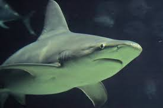
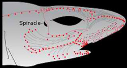
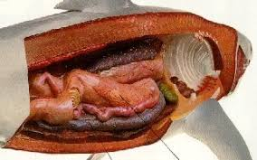

The whale shark is the largest living fish. Sharks can reach about 50 feet (15 meters) long and weigh nearly 20 tons. The smallest shark is the dwarf lantern shark, which is only about 7.5 inches (19 centimeters) long.Most sharks have a pointed snout that extends forward over the mouth. However, hammerhead sharks have a wide, flat head. A shark’s teeth are sharp and triangular and grow throughout its life shark always have backup teeth they often lose their teeth but they have many backup teeth so then when they loses their teeth the backup teeth pop in to replace.These collagenous fibres act as a corset and an exoskeleton.

Shark skin is used as sandpaper and, when treated, as leather. The muscles are attached directly to these fibres, which is effective in saving energy. There are tiny ‘teeth’ on the skin that are in place to reduce turbulence, allowing the shark to cruise unhindered through the water. A shark cannot swim backwards due to the structure of their fins. Their tails are used for forward thrust and propulsion while the caudal fin assists. The pectoral fins keep the animal lifted, working against the downward pushing of the caudal fin, and assisting in steering. Depending on its specific needs, different sharks have different tails.Here’s one of the more well known areas of shark anatomy. The fins of a shark are easily recognizable, and immensely important.
Most sharks have five different types of fins, while some sharks only have four. These types of fins include: Pectoral Pelvic Dorsal Anal Caudal fins Pelvic Fins.Behind the pectoral fins, are the pelvic fins; these keep the shark stabilized while it swims. In male sharks, pelvic fins are also used as claspers, which are necessary for the reproduction process.Dorsal Fins,Dorsal fins are the ones that most people are familiar with; these fins are often seen when a shark is at the water’s surface. Oftentimes, sharks have a first and second dorsal fin. These fins are also used for stability during swimming.Anal FinsFor some sharks, these fins are not enough to completely stabilize them. Therefore, the anal fin is present to provide additional stability to the sharks that possess them. The anal fin is located between the pelvic and caudal fins on the bottom, or ventral, part of the shark. Caudal Fins When it comes to the shark having the ability to propel itself through the water, they utilize what is called the caudal fin. This fin, also known as the tail fin, has an upper and lower lobe that, depending on the type of shark, can vary in shape and size. The upper lobe of the caudal fin produces the majority of the shark’s thrusting abilities. The tail fin is one of the most important parts of the entire shark anatomy.
Spines are included in the shark anatomy as a form of protection. For many sharks and most rays, spines are included in their anatomy to defend them against potential predators. Although many associate sharks and rays as venomous, antagonistic bullies, defense mechanisms such as spines are used precisely for that, defense. Spines are not used aggressively. Many sharks have spines on their dorsal fins.Like other fish, the shark anatomy includes gills to aid in respiration. Located on the side of a shark’s head are five to seven gill slits; in order for gas exchange to occur correctly, water has to consistently flow over the gill slits. Once the shark allows water to enter their mouth, it goes through the pharynx, over the gills, and finally leaves through the actual gill slits.You many have noticed that the bodies of sharks are typically rounded and tapered at both ends. This type of shape causes them to have what is called a fusiform body. This body shape is exceedingly helpful because it minimizes drag, and it enables sharks to swim efficiently while using the least amount of energy possible.The coloration of sharks is enormously unique and important; not only is it yet another form of protection from their predators, but it also aids them when capturing prey. The dorsal (top) side of a shark is a lighter color than the ventral (bottom) side. This coloration is a type of camouflage called counter shading. When viewed from above, the dark side of the shark blends in with the depths of the ocean. When viewed from below, the light ventral side blends in with the ocean’s surface. 
If you were to look inside the body of a shark, you would notice many of the same organs that humans have. Both sharks and humans have stomachs (although human trash can often be found in a shark’s stomach) spleens, pancreas, rectums, and liver. There is a huge difference between the human liver and the shark liver however. The liver is usually the first thing one would notice when peering inside and seeing the shark anatomy. A shark’s liver can take up approximately 25% of the total body weight. The liver is detrimental to the shark, and it has two purposes. Fatty reserves are kept in the liver, thus causing it to be a store of energy. In addition, the liver actually keeps the shark from sinking. Buoyancy is what works against the tendency of sinking; because the liver stores oils that are lighter than water, the density of the shark’s body is lighter, thus supplying the needed buoyancy for the shark. Due to this particular function, the liver is considered to be a hydrostatic organ. Shark Digestion The shark anatomy includes an intestine that is used for digestion. The shark’s intestine is shortened, but it also spirals so that it takes up the least amount of space possible. When a shark needs to get rid of waste, it utilizes its kidneys, genitals, and cloaca. The cloaca is an opening that the kidneys and genitals. 
The skeleton of a shark is entirely composed up of cartilage. It is a bit alarming, but sharks do not have bones. The fact that sharks have cartilage instead of bone is extremely beneficial. Cartilage is lighter than bone; this helps the shark stay afloat. Because cartilage is also extensively durable and flexible, sharks have the ability to have tight radius turns. The skull of a shark, which is also comprised of cartilage, can vary in shape. In fact, there are numerous ways in which a shark’s jaw can be connected to the cranium; the method in which the shark feeds, determines how the jaw will attach to the cranium. Mouth, Teeth, And Sense Of TasteThe mouth of a shark, one of its most recognizable features, is usually located on the ventral side. The inside of a shark’s mouth is full of rows and rows of teeth. Like a shark’s skin, massive placoid scales make up the teeth of a shark. Because sharks don’t have a literal jawbone for the teeth to attach themselves to, they are connected to the skin that covers the jaw cartilage. Sharks are constantly replacing their teeth; believe it or not, some sharks use more than 30,000 teeth over a life span. When a new tooth grows, the skin maneuvers the tooth into a proper position.. Although an extensive amount of information has not been found about sharks, we do know that they have taste buds. Some sharks spit things out after they have bit into them; this is most likely due to the fact that they did not like the particular taste. Sharks have the reputation of devouring almost anything and anyone, but they are certainly pickier than many people realize.
Eyes, Eyelids, and Eyesight Sharks have exceptional eyes that enable them to see acutely, even in low light. Behind their retina, is the tapetum lucidum; this is a layer that is comprised of silver guanine crystals that reflects light as it exits the eye. This is the part of the shark anatomy that enables sharks to have the ability to see in low light.The eyelids of some sharks are certainly not typical. There are sharks that have what is called a nictating membrane. This feature provides a substantial amount of protection for the eye. When sharks get relatively close to a particular object, or when they are feeding, the nictating membrane closes, thus acting as a shield for the eye. Some sharks, like thegreat white shark, actually have a set of muscles that roll the eye into its socket whenever the eye needs protection.The eyesight of bony fish pales in comparison to the sight of a shark. The shark anatomy allows them to see in dim light, they can detect the contrasts of light and shadow, and their pupils can dilate and contract..Nostrils And Sense Of Smell.The nostrils of a shark are and external part of the shark anatomy, and on the ventral side of their bodies. Some species of sharks have barbells, otherwise known as whiskers, near their nostrils. A shark’s sense of smell is unbelievably keen. For example, they can detect a drop of blood hundreds of feet away. Certain chemicals with a concentration as low as one part per billion, can be detected.